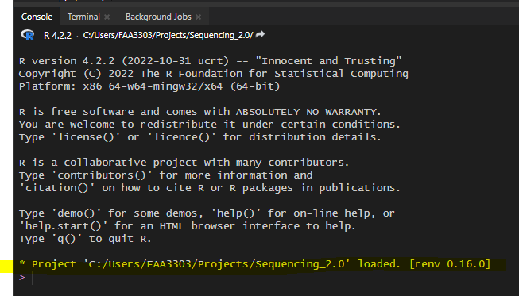

terminal
USER@workbench-1:~/path/to/workspace/folderThis doc will go over how to create and manage:
A virtual environment is a self-contained, isolated workspace that allows you to manage project-specific dependencies and avoid conflicts between different projects. Virtual environments allow us to execute code while accounting for software/package version differences we have on our local machines. This repo uses virtual environments to configure a user’s R and Python software and packages to the repo’s specific package versions.
For example, say you have dplyr version 2.0 but this repo uses dplyr version 1.1, you may not be able to run the scripts as intended by the author since the functions in dplyr 1.1 may be different than in 2.0. The virtual environment will allow a given user to use only this repo’s version of dplyr so they can run the code as intended.
venv is a module for creating virtual python environments. From the python venv docs:
The venv module supports creating lightweight “virtual environments”, each with their own independent set of Python packages installed in their site directories.
A virtual environment is (amongst other things):
- Used to contain a specific Python interpreter and software libraries and binaries which are needed to support a project (library or application). These are by default isolated from software in other virtual environments and Python interpreters and libraries installed in the operating system.
- Contained in a directory, conventionally named .venv or venv in the project directory, or under a container directory for lots of virtual environments, such as
~/.virtualenvs.- Not checked into source control systems such as Git.
- Considered as disposable – it should be simple to delete and recreate it from scratch. You don’t place any project code in the environment.
- Not considered as movable or copyable – you just recreate the same environment in the target location.
To create a venv in Python we can do it in a terminal window. Below are instructions on how to create one with VS Code (or Positron).
you should create a new venv for every isolated project!
Positron has all the features of VS Code and Rstudio combined, so it’s much easier to set up for R users looking to get into Python and vice-versa.
Managing a venv in Positron is a bit easier than in VS Code because the UI is more user friendly for venv and renv.
Open Positron and you will see a screen like this
Assuming you already have a project folder, click Open Folder and navigate to the root of the folder you want to work in.
Workspaces are like isolated projects. Each isolated project needs to have its own virtual environment so that we can avoid unwanted package issues seeping into multiple projects unknowingly.
Open VS Code and you will see a screen like this
Assuming you already have a project folder, click Open Folder and navigate to the root of the folder you want to work in.
Workspaces are like isolated projects. Each isolated project needs to have its own virtual environment so that we can avoid unwanted package issues seeping into multiple projects unknowingly.
Now you should see a terminal window with your folder in it looking like -
terminal
USER@workbench-1:~/path/to/workspace/folderinstall uv:
terminal
curl -LsSf https://astral.sh/uv/install.sh | env UV_INSTALL_DIR="/custom/path" shnow run this to create a virtual environment:
terminal
uv venv .venv --python=python3.10this is saying create a venv named .venv with a specific python version (3.10, but it can be any version you want for this specific project):
you should get this message:
terminal
Using CPython 3.10.12 interpreter at: /usr/bin/python3.10
Creating virtual environment at: .venv
Activate with: source .venv/bin/activateterminal
source .venv/bin/activateyou should see this with .venv on the left of your username:
Now you are in an isolated virtual environment called .venv. To add packages, run
terminal
uv pip install <PACKAGE_NAME>for example
terminal
uv pip install polarsif you have a project that has existing packages in a requirements.txt file, you can install all of them like this:
terminal
uv pip install -r requirements.txtNow that you have your venv named .venv, we still need to tell Positron and VS Code that we want that venv to run our python code.
Create a new python script in your folder.
Now in the upper right you will see a dropdown menu of Python (or R). Click it and you should see the path to the .venv you created in your workspace. Then click the start symbol to start that venv
In your terminal, install a package that you haven’t installed before and then try to call that package in your python script. To demonstrate:
terminal
uv pip install great_tablesNow write the import in your python script:
script.py
import great_tables as gtNow highlight that code in your script and press CTRL + ENTER and it will execute the code in your Python Console.
Create a new python script in your folder.
Now go to Settings > Command Palette > and type Python: Select Interpreter
You should see this:
Now to Enter your specifc interpreter, click on these options:
In your terminal, install a package that you haven’t installed before and then try to call that package in your python script. To demonstrate:
terminal
uv pip install great_tablesNow write the import in your python script:
script.py
import great_tables as gtand run the code in a Jupyter cell by highlighting the code > right click on it > Run in Interactive Window > Run Selection/Line in Interactive Window
It should now open a window where you can run your python code and examine your variables at once.
PyCharm also works great with a virtual environment.
You may also be able to open a PyCharm window from an Anaconda prompt like with VS Code (if it’s installed in your env). To do so, write pycharm in the prompt and it should open a new window with the env activated.
If that doesn’t work, open PyCharm and on the bottom right there is a python version and interpreter selected. Click it and open “Add New Interpreter” > “Add local interpreter”. This opens a new window. Click “Conda Environment” and under “Interpreter” click the dropdown. You should be able to see your new environment there. If not, click away and click the dropdown again. It’s weird sometimes.
Then click okay. Close and reopen the Python Console window and it should have your environment path for the python.exe. Also, the Python Libraries window should have all of the libraries in your environment now.
Notice that now there are a list of interpreters for you to use. You can now switch back and forth between environments. This is great if you have other repos to use or want to test out new packages that aren’t in the main environment.
Repos may have a file named environment.yml for conda environments. It contains a list of all packages and versions used for Python software. This file can be used as a set of instructions for your local machine when configuring your local environment.
You should already have Anaconda installed on your machine if not..
You may have different Anaconda prompts (prompts aligned with different shells, like PowerShell, bash, etc). There should be a generic Anaconda prompt. Open that one:

If the first line in the prompt doesn’t start with (base), write:
conda deactivate
and it will bring you back to your base environment.
Change the directory of the prompt to the repo’s directory. The code is
cd C:/Users/XXXXXXX/Projects/Sequencing_2.0
If you are already in your user directory, you can just type
cd projects/sequencing_2.0
capitalization doesn’t matter

Notice that the folder path is now changed to the sequencing repo folder.
Now we’re ready to create a new environment based on the repo’s environment.
Type: conda env create --name seq_env --file=environment.yml
Note that how you name your environment doesn’t really matter, but name it something that resembles the repo. This will save the headache of having random environments for random repos that you can’t remember..
conda env create will create a new environment in your C:/Users/XXXXX/Anaconda3/envs file path--name or -n will name that environment, in this case seq_env--file=environment.yml this code will take the file in the sequencing 2.0 repo and use it to create this environment. It is essentially a copy of the software versions in the file.Note: I sped up the gif below. The whole process may take a few minutes

You can switch between environments in the conda prompt or in a programming IDE (or both? idk). To activate and switch the env, write:
conda activate <env_name>
in this case
conda activate seq_env
The environment your in will show on the left of the prompt message. In this case it says (seq_env) instead of (base). That way you know what env your working in
Let’s say you want to add a new python package to the repo. I recommend doing this in an Anaconda prompt and then saving it over the environment.yml. Then you can push the new environment.yml with the new changes to github. Use these steps:
Go to the Anaconda prompt, make sure you’re in the repo file path (cd projects/sequencing_2.0) and make sure you’re in the right conda env (conda activate seq_env).
Now, install the package. Usually packages can be installed with pip install or conda install or conda install -c conda forge <package>. This depends on the packages. Some need pip, others need conda. Google it to find out. Here i’m going to download a package from NCBI to demonstrate. The package is called ncbi-datasets-cli.
conda-forge to install. Type in conda install -c conda-forge ncbi-datasets-cliNow we need to save this package to the repo’s environment.yml
conda env export > environment.yml
For virtual environments in R, the package called renv is commonly used. It will save a list of packages to a lock file, similar to environment.yml or requirements.txt. Then, every time you or another teammate opens the R project in your repo the renv package will activate in the background and determine if any packages are not aligned with the repo’s lock file. It will ensure that everyone is using the same package versions
Your repo should have a .Rproj file at the root of the directory. If it doesn’t you can create it by opening Rstudio > File > New Project... > Existing Directory (or New Directory) Make sure .Rproj files are NOT in your .gitignore
Open Positron and you will see a screen like this
Assuming you already have a project folder, click Open Folder and navigate to the root of the folder you want to work in.
Workspaces are like isolated projects. Each isolated project needs to have its own virtual environment so that we can avoid unwanted package issues seeping into multiple projects unknowingly.
Open up Rstudio and in the upper right, click Project: (None) dropdown and select New Project...
Now create a new project either in a new folder or an existing folder.
For existing directories, you can select the folder with Browse and select the R version
All of this will create a file called <your_project_name>.Rproj. And you should now be in that R project in Rstudio:
Now that we’re in the root of your repo directory, let’s initialize renv.
First install renv:
Console
install.packages("renv")In your console run this:
Console
renv::init()
renv::init() will:
renv libraries path (similar to your C drive R libraries paths).gitignore within the renv libraries path so that you don’t get spammed with thousands of libraries in your git commitenvironment.yml for conda. Think of it as instructions for which packages your repo is usingactivate R script which will activate that renv every time the repo is opened from the .RprojRestart your R session (Session > Restart for Rstudio, or the Restart button in the console for Positron).
renv should now automatically activate whenever you are in the project/workspace.
If you need to install a new package and want to put it in the repo, you will need to update the lock file. To do either of these:
Console
renv::install("<PACKAGE_NAME>")or
Console
install.packages("<PACKAGE_NAME")Now if you can check your package updates into version control so that other collaborators can install the same packages with the same versions.
After you have the packages installed run
Console
renv::snapshot()This will overwrite the lock file with the packages you added. Now you can push the renv.lock file to github and other collaborators can sync with your changes.
There may be version dependency issues when installing a package and running a script. You may need to use renv::history() to see the previous hash of the lock file and use renv::revert() to revert the lock file back to its previous, stable state. More on this here https://solutions.posit.co/envs-pkgs/environments/upgrades/

The video at the bottom of this page explains in detail renv and its capabilities https://solutions.posit.co/envs-pkgs/environments/upgrades/
Now look at your git status and you will see all the files renv created.
We have
.Rprofile that contains an renv activate.R script - this will activate the repo’s renv every time the project is openedrenv.lock file shows information on each package used in the repo and is used to update collaborator’s environments to match the lock file.renv/.gitignore I don’t feel like explaining this one right now - i’ll write more laterrenv/activate.R this will activate the env whenever the R project is openedrenv/settings.dcf I have no clue what this is
If you already have an existing repo, you will probably see warnings and errors in the renv::init() like I did in the gif above. Not to worry! Read the warnings and follow the instructions. Usually you will need to re-install a package. If you get this warning:
Console
These may be left over from a prior, failed installation attempt.
Consider removing or reinstalling these packages.Console
renv::install("<PACKAGE_NAME>")renv::snapshot().Now the package will be installed correctly
For Rstudio, open up the .Rproj file we created above, or the workspace in Positron
This will open up an R window with the repo file path as a root directory. It will also utilize the renv. Your console should say something about renv, like this

The first time you use renv you will need to configure it to your machine. To do this, run:
Console
renv::restore()This will create a new environment for your R in your machine using the lock file packages.
Now you’re ready to use the scripts! Way less complicated than conda
Now that your R and Python environments are set up, if you have code that uses the reticulate package in R, it might still be pointing to your base Python environment. So, if you need to write python code in R (using reticulate), the code may break. Here’s what you need to do to make sure your reticulate python path is pointing towards your conda environment:
where python and it will provide you with a python.exe for that particular env. Copy that path.Rprofile file in your repo and add this code: Sys.setenv(RETICULATE_PYTHON = PATH_TO_ENV_PYTHON))
Sys.setenv(RETICULATE_PYTHON = file.path(Sys.getenv("USERPROFILE"),"Anaconda3/envs/seq_env/python.exe")) where Sys.getenv("USERPROFILE") will add C/Users/XXXX/ and it will automatically add the user’s namereticulate::py_config() in your console. This should now show your conda environment path being used for reticulate